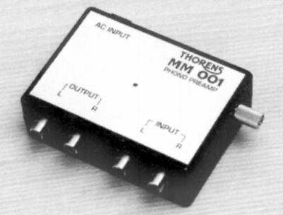

MM-001

■価格 18,000円■フォノイコライザーアンプ■入力感度/インピーダンス 5mV/47KΩ■出力レベル 200mV■利得 ■SN比 82dB■周波数帯域 ■入力換算雑音 ■チャンネルセパレーション ■消費電力 ■電源 ■重量 96g■寸法 W9.8×H3.5×D8.0cm ■発売 1999年6月■販売終了 年頃■備考 価格は1999年頃のもの
MMポジションのイコライザーアンプ。
トーレンスのインデックスヘ